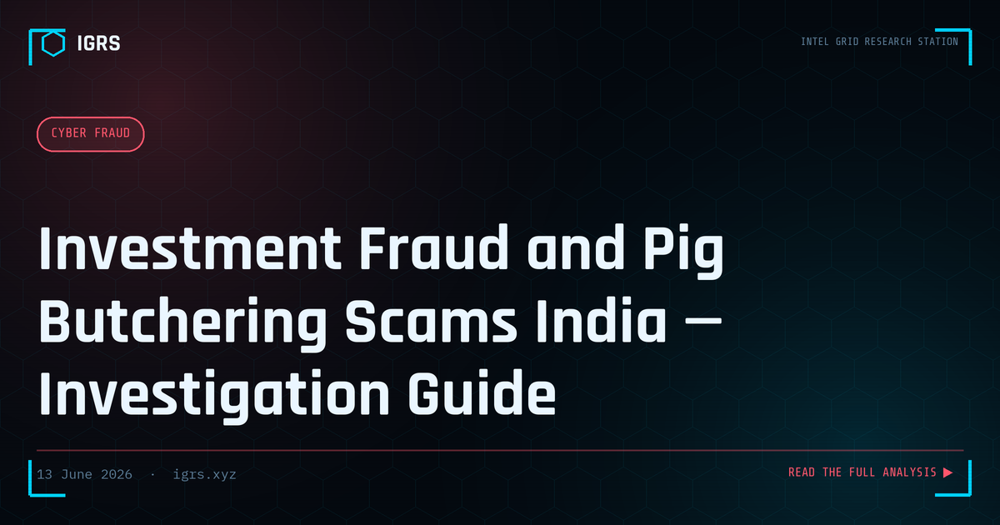

Investment Fraud and Pig Butchering Scams India — Investigation Guide
Investment fraud — particularly the "pig butchering" variant — has become India's largest cybercrime by value. Victims lose lakhs to crores to sophisticated fake trading platforms, WhatsApp investment groups, and crypto pump-and-dump schemes. Understanding the anatomy of these scams is critical for investigators.
What is Pig Butchering?
Pig butchering (sha zhu pan in Chinese) is a long-term investment fraud where criminals build a relationship with the victim over weeks or months before introducing a fraudulent investment opportunity. The "pig" (victim) is "fattened" (trust built) before being "butchered" (defrauded of maximum amount).
Typical Operation
- Contact: WhatsApp/Telegram message claiming wrong number, or LinkedIn/dating app connection
- Relationship building: Daily contact over weeks, emotional connection, trust building
- Introduction: Fraudster mentions their "uncle's investment tips" or "exclusive trading platform"
- Small wins: Initial small investment shows fake profits on platform
- Escalation: Victim invests larger amounts, shown more profits
- The block: Victim tries to withdraw, platform demands "taxes" or "KYC" fees. After paying, platform disappears
Fake Trading Platform Investigation
- Domain age check — legitimate trading platforms have years of history
- SEBI registration check at sebi.gov.in — unregistered = illegal
- RBI authorized forex dealers at rbi.org.in — only regulated entities can offer forex trading
- App store check — fake apps not on Play Store/App Store, distributed via APK
- SSL certificate issuer — fake platforms use free Let's Encrypt with freshly registered domains
OSINT on Fraudster
- Phone number OSINT — Truecaller, TAFCOP, CDR request
- WhatsApp profile history — when was account created, profile photo reverse search
- Social media — often uses stolen profile photos
- IP address from platform login — if accessible
- Crypto wallet tracing — if payments to crypto wallet
Legal Sections and Recovery
Applicable sections: S.318 BNS (cheating), S.66D IT Act (personation using computer), SEBI Act violations for unregistered investment advice, PMLA for money laundering. Recovery: cybercrime.gov.in complaint, SEBI complaint portal, bank reversal request with police complaint number.